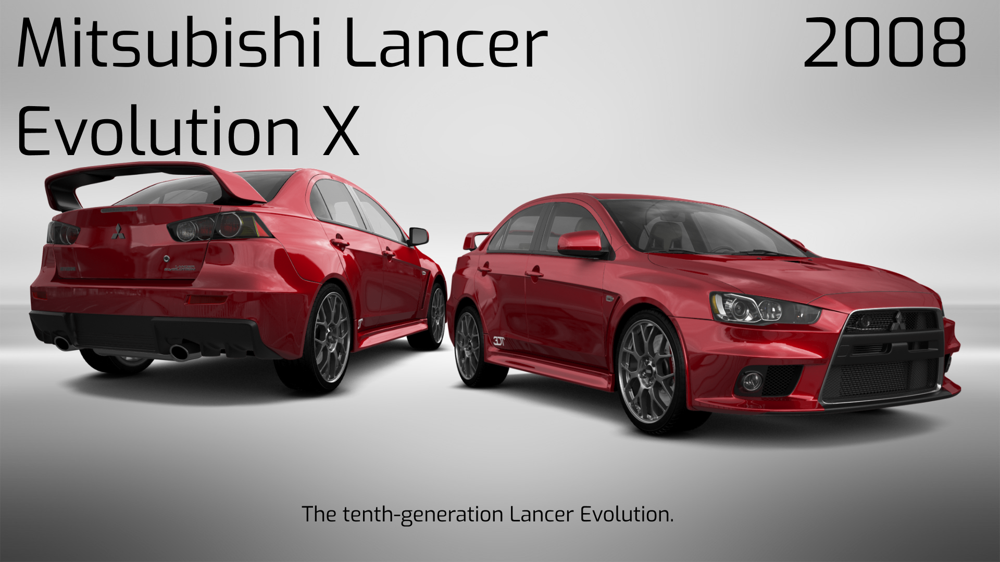
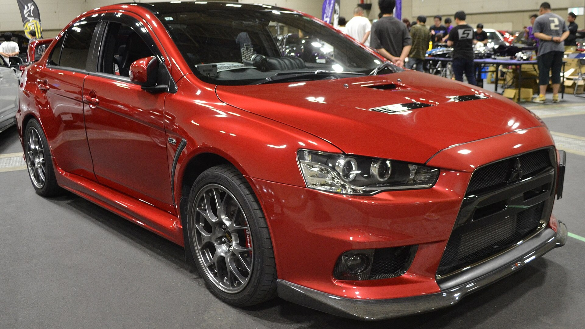
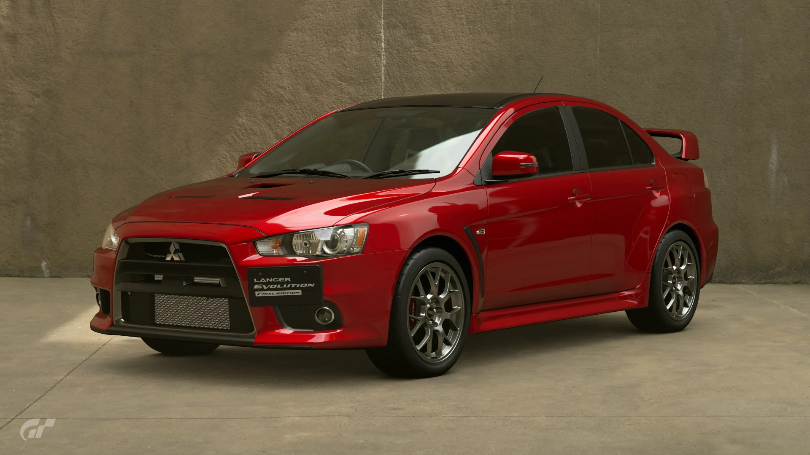
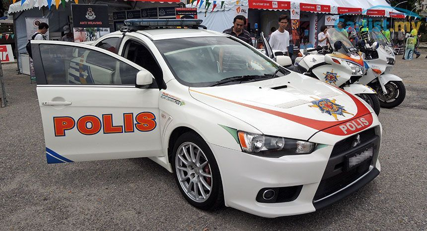
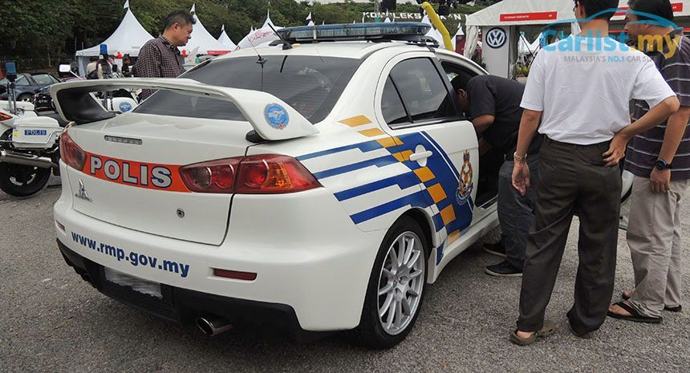

The Mitsubishi Lancer Evolution X is the tenth and final generation of the Lancer Evolution, a sports sedan produced by Japanese manufacturer Mitsubishi Motors, designed by Omer Halilhodžić.
By September 2005, Mitsubishi introduced a concept version of the next-gen Evolution at the 39th Tokyo Motor Show named the Concept-X, designed by Omer Halilhodžić at the company's European design centre.
Mitsubishi unveiled a second concept car, the Prototype-X, at the 2007 North American International Auto Show (NAIAS).
The Lancer Evolution X sedan features a 4B11T 2.0L (1998cc) turbocharged, all-aluminium inline-4 GEMA engine. Power and torque depend on the market but all versions have at least 280 PS (206 kW; 276 hp). (JDM version), the American market version has slightly more. The UK models were reworked by Mitsubishi UK, in accordance with previous MR Evolutions bearing the FQ badge. Options for the UK Evolutions are 300 hp (220 kW) and 360 hp (270 kW).
Two versions of the car are offered in the U.S. The Lancer Evolution MR, with 6-speed Twin Clutch Sportronic Shift Transmission (TC-SST). The other version is the GSR which has a 5-speed manual transmission system. The car also has a new full-time four-wheel drive system named S-AWC (Super All Wheel Control), an advanced version of Mitsubishi's AWC system used in previous generations. The S-AWC uses torque vectoring technology to send different amounts of torque to the rear wheels.
It also featured Mitsubishi's new 6-speed SST dual-clutch automatic transmission with steering-mounted magnesium alloy shift paddles. It has replaced the Tiptronic automatic transmission, hence the SST version replaced the GT-A version (which was used in Evolution VII and Evolution IX Wagon). A 5-speed manual gearbox was also available. The Lancer Evolution also incorporated Mitsubishi's next-generation RISE safety body.
A "Final Edition" (FE) trim was offered for sale after Mitsubishi announced that production of the Lancer Evolution would end after the 2015 model year. It had special production badges that were put on the center console indicating which number it is of the allocated amount per market. Being based on the GSR trim, a 5-speed manual transmission was mandatory. It also featured a black roof, "Final Edition" emblems, and darker Enkei wheels. Power was increased from 291 hp to 303 hp.
The Evolution X Final Edition was first made available in Japan, where 1,000 units were produced for the domestic market, with limited customization options. 150 of them were made available to the Australian and New Zealand market(s) as grey market imports. Only 350 units of the 2015 Mitsubishi Lancer Evolution Final Edition were sold in Canada, while another 1,600 units were sent to the United States.


The engine is the 4B11T-type 2.0 litre turbo inline-4. The Evolution X can accelerate from 0–100 km/h (62 mph) in 4.5 to 4.7 seconds. Aluminum is used in the roof panel, hood, front fenders and the rear spoiler frame structure. The launch model's engine was rated at 280 PS (206 kW; 276 hp) at 6,500 rpm and 422 N⋅m (311 lb⋅ft) at 3,500 rpm. Following the repeal of the 276 horsepower Gentleman's Agreement in Japan, engine power was raised to 300 PS (221 kW; 296 hp) at 6,500 rpm beginning in 2009 model year.
Engine produces 295 PS (217 kW; 291 hp) at 6,500 rpm and 407 N⋅m (300 lb⋅ft) at 4,400 rpm.
UK cars kept the Evolution X name.
Acceleration: 0–100 km/h (62 mph) 4.8 sec. with 1,560 kg (3,439 lb); and 4.9 sec. with 1,600 kg (3,527 lb). Engine rated at 295 PS (217 kW; 291 hp) at 6,500 rpm and 366 N⋅m (270 lb⋅ft) of torque at 3,500 rpm.
The Lancer Evolution X arrived in Brazil in 2008 and is sold only with the twin-clutch transmission.
Engine rated at 295 PS (217 kW; 291 bhp) at 6,500 rpm and 366 N⋅m (270 lb⋅ft) of torque at 3,500 rpm.
The Philippines received its Evolution X in November 2008 and is the same as the USDM versions. The trims and specs are almost the same, excluding the MR Touring model from the USDM.
In Malaysia, the Lancer Evolution X is available with only a 6-speed Twin Clutch SST transmission. Front license plates are aligned towards the center or right of the fascia. In 2009, the Royal Malaysian Police acquired a fleet of 5-speed manual-equipped Lancer Evolution X to be used in high-speed pursuits.

